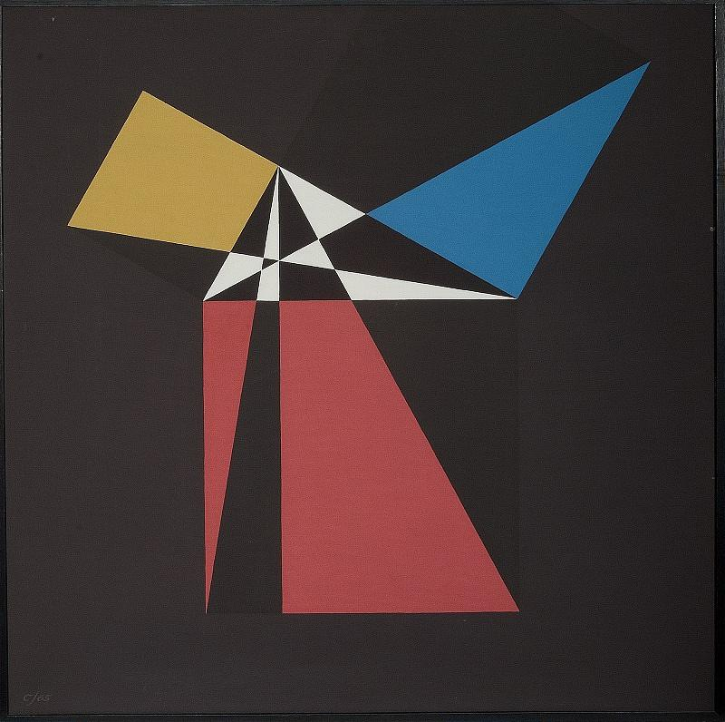
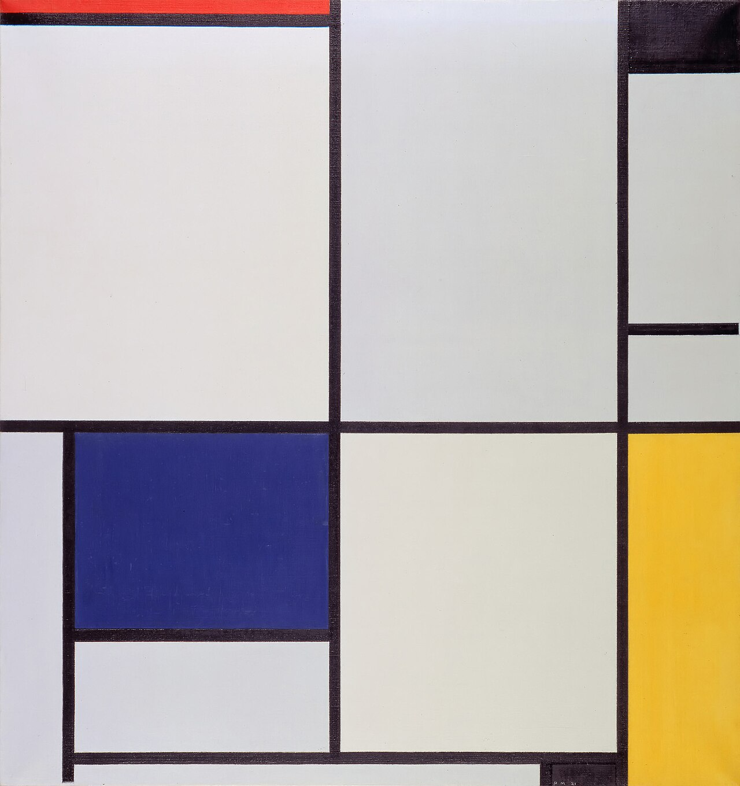
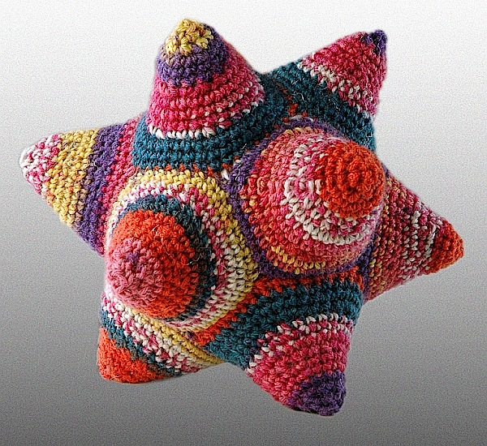
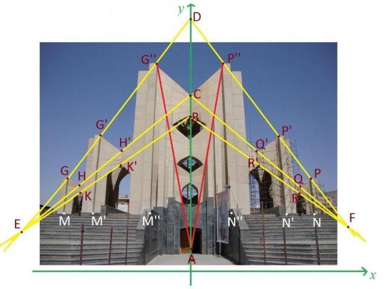
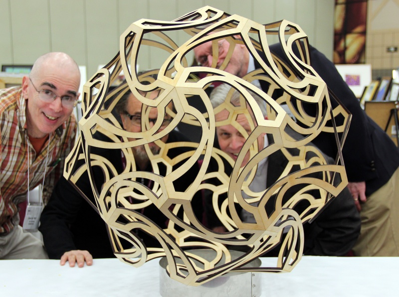
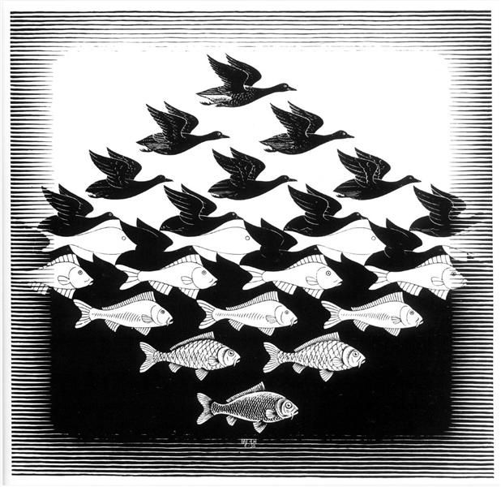

When speaking of math and art, they are usually ideologically separated into entirely opposite categories. Math is considered hard or cold in nature, without emotion or delight in the numbers. On the other hand, art is categorically soft and expressive. If we were to only stick to these generalizations, we would miss out on the powerful expressiveness when they are partnered together.
In truth, math and art are almost inseparable pair. In most all forms of art, math creates the structural underpinnings that guide visual elements to build and blend on top of each other.

Each on its own is a powerfully descriptive language. Together, they spark innovation in both creative and technological endeavors in ways that would have once seemed impossible. In the images above, the painters were captivated by mathematical concepts that they explored with their art.
The top image is an example of the work of Crockett Johnson. Johnson built a career as an author and cartoonist, but later found himself inspired by geometry. He painted several paintings exploring proofs of geometric and mathematical theories. The top painting is called Proof of Pythagorean.
The next painting is one of the most famous from Dutch painter Piet Mondrian, who was struck by the power of geometric lines. To Mondrian, these paintings expressed the balance and harmony of math and nature.
| Art | Medium | Related Math Concepts | Explore |
|---|---|---|---|
| Knitting/Crochet | Fiber | Geometry, Topology, Loops |  |
| Architecture | Stone, Metal | Geometry, Tesselations |  |
| Sculpture | Clay, plastic | Proportion, Golden Ratio, Topology |  |
